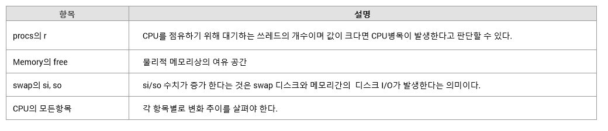

개요
DBMS와 연관된 기술 지원을 하게 되면 Altibase가 제공하는 성능뷰만으로는 문제 해결을 위한 정보가 부족한 경우들이 있다.
이때 운영체제에서 제공하는 몇 가지 명령어를 이용하여 필요한 정보를 획득할 수 있는데 본 문서에서 그와 관련된 명령어들을 설명한다.
공통 명령어
모든 운영체제에 실행이 가능한 특별히 제약을 갖지 않는 공통적인 명령어를 설명한다.
netstat
네트웍 설정이나 오류 패킷 여부가 존재하는지 확인한다.
Shell> netstat -in Kernel Interface table Iface MTU RX-OK RX-ERR RX-DRP RX-OVR TX-OK TX-ERR TX-DRP TX-OVR Flg enp5s0 1500 11116829 0 126934 0 74209 0 0 0 BMRU enp7s0 1500 0 0 0 0 0 0 0 0 BMU lo 65536 4709762 0 0 0 4709762 0 0 0 LRU
패킷상의 송수신간에 문제가 발생할 경우 R(T)X-ERR/R(T)X-DRP/R(T)X-OVR 등이 수치가 증가된다. 이 경우는 네트웍상에 어떤 문제가 있을 수 있음으로 관리자로 하여금 점검하도록 조치한다.
vmstat
시스템의 메모리, 디스크, swap in/out, CPU의 상태 등을 전반적으로 사용자가 정한 간격으로 조회할 수 있다.
Shell> vmstat 1 5 (1초단위로 5번을 화면에 출력) procs -----------memory---------- ---swap-- -----io---- -system-- ------cpu----- r b swpd free buff cache si so bi bo in cs us sy id wa st 1 0 0 14407272 377356 472884 0 0 0 1 1 1 0 0 100 0 0 1 0 0 14405904 377356 472884 0 0 0 0 150 381 0 0 99 0 0 1 0 0 14406332 377356 472884 0 0 0 0 56 111 0 0 100 0 0 0 0 0 14406332 377356 472884 0 0 0 0 36 67 0 0 100 0 0 0 0 0 14407200 377356 472884 0 0 0 16 45 104 0 0 100 0 0
확인할 주요 지표는 다음과 같다.

Linux
Thread별 CPU 사용량
리눅스(Linux)에서 쓰레드 별 CPU를 top명령어로도 확인이 가능하다. top -H 옵션으로 수행하면 쓰레드 별로 조회가 된다. 하지만 설치된 procps version이 3.2.7 이상이어야 가능하다.
아닌 경우 간단하게 다음과 같이 확인한다. (낮은 버전에서는 잘 지원 안됨)Shell> ps -LFm -p <process id> UID PID PPID LWP C NLWP SZ RSS PSR STIME TTY TIME CMD altibase 7153 1 - 8 47 921763 896248 - 16:53 ? 00:10:50 /home/lim272/altibase_home/bin/altibase -p b altibase - - 7153 0 - - - 2 16:53 - 00:00:00 - altibase - - 7154 0 - - - 0 16:53 - 00:00:00 - altibase - - 7163 0 - - - 7 16:53 - 00:00:10 - altibase - - 7164 0 - - - 1 16:53 - 00:00:10 - altibase - - 7165 2 - - - 1 16:53 - 00:03:20 -
LWP가 쓰레드 별 고유번호이며 C항목에 출력 되는 값이 CPU사용율이다.
|
pstack
pstack과 같이 쓰레드의 CPU점유를 확인하면 쓰레드가 현재 어떤 부분을 수행 중인지 확인하는 방법으로 사용한다.
다만, 일부 커널이 낮은 버전의 경우는 pstack이 지정된 쓰레드의 스택만 보여 주는 경우도 있다.Shell> pstack <process id> Thread 45 (Thread 0x7f8d27794700 (LWP 7164)): #0 0x00007f8d2e8669b3 in epoll_wait () from /lib64/libc.so.6 #1 0x0000000000f5e761 in cmnDispatcherDetectSOCKEpoll(cmnDispatcher*, iduList*, unsigned int*, PDL_Time_Value*) () #2 0x0000000000f49dcb in cmiSelectDispatcher(cmnDispatcher*, iduList*, unsigned int*, PDL_Time_Value*) () #3 0x000000000042a4fc in mmtServiceThread::findReadyTask(PDL_Time_Value*) () #4 0x000000000042cfb7 in mmtServiceThread::run() () #5 0x0000000000f80da2 in idtContainer::staticRunner(void*) () #6 0x00007f8d2f796df3 in start_thread () from /lib64/libpthread.so.0 #7 0x00007f8d2e8663dd in clone () from /lib64/libc.so.6 Thread 44 (Thread 0x7f8d26bf3700 (LWP 7165)): #0 0x0000000000e6660e in smnnSeq::fetchNext(smnnIterator*, void const**) () #1 0x0000000000ec70ce in smiTableCursor::readRow(void const**, scGRID*, unsigned int) () #2 0x00000000006b83f2 in qmnSCAN::readRow(qcTemplate*, qmncSCAN*, qmndSCAN*, int*) () #3 0x00000000006b851b in qmnSCAN::doItNext(qcTemplate*, qmnPlan*, int*) () #4 0x00000000006b710b in qmnSCAN::doIt(qcTemplate*, qmnPlan*, int*) () #5 0x0000000000887a1a in qmnJOIN::doItRight(qcTemplate*, qmnPlan*, int*) () #6 0x0000000000887c3f in qmnJOIN::doIt(qcTemplate*, qmnPlan*, int*) () #7 0x0000000000881b14 in qmnHSDS::doItDependent(qcTemplate*, qmnPlan*, int*) () #8 0x0000000000881c4f in qmnHSDS::doIt(qcTemplate*, qmnPlan*, int*) () #9 0x00000000006bb2a4 in qmnPROJ::doIt(qcTemplate*, qmnPlan*, int*) () #10 0x00000000004d27cf in qci::moveNextRecord(qciStatement*, smiStatement*, idBool*) () #11 0x000000000043f682 in mmtServiceThread::fetch(cmiProtocolContext*, mmcSession*, mmcStatement*, unsigned short, unsigned short, unsigned short, unsigned int) () #12 0x00000000004402ad in mmtServiceThread::fetchProtocol(cmiProtocolContext*, cmpProtocol*, void*, void*) () #13 0x0000000000f4b477 in cmiRecv(cmiProtocolContext*, void*, PDL_Time_Value*, void*) () #14 0x000000000042a7ef in mmtServiceThread::executeTask_READY(mmcTask*, mmcTaskState*) () #15 0x000000000042c355 in mmtServiceThread::executeTask() () #16 0x000000000042c922 in mmtServiceThread::multiplexingAsShared() () #17 0x000000000042cfb7 in mmtServiceThread::run() () #18 0x0000000000f80da2 in idtContainer::staticRunner(void*) () #19 0x00007f8d2f796df3 in start_thread () from /lib64/libpthread.so.0 #20 0x00007f8d2e8663dd in clone () from /lib64/libc.so.6
위 결과는 모두 쓰레드 별로 출력되기 때문에 각 쓰레드 별로 구분하고 단락 내에서는 가장 아래부터 위로 확인한다. 위의 예제에서 Thread 44 (LWP: 7165)번은 다음과 같은 순서이다.
|
위의 결과와 같이 ps/pstack의 정보를 조합하면 CPU를 가장 많이 사용하는 특정 쓰레드가 어떤 일을 수행 중인지 확인이 가능하다. 또한, 많은 SQL문중에 위의 pstack결과를 통해 좀 더 범위를 좁힌 추적을 가능하게 할 수 있다.
사용 중인 파일 목록 확인
리눅스에서 lsof와 같은 별도의 유틸을 설치하지 않는다면 다음과 같이 한다.
Shell> ls -l /proc/<process id>/fd lrwx------ 1 altibase altibase 64 Aug 14 18:56 44 -> socket:[130274146] lrwx------ 1 altibase altibase 64 Aug 14 18:56 46 -> /home/altibase/altibase_home/logs/logfile21 lrwx------ 1 altibase altibase 64 Aug 14 18:56 47 -> /home/altibase/altibase_home/logs/logfile22 lrwx------ 1 altibase altibase 64 Aug 14 18:56 48 -> /home/altibase/altibase_home/logs/logfile23 lrwx------ 1 altibase altibase 64 Aug 14 18:56 49 -> /home/altibase/altibase_home/logs/logfile24
리눅스는 /proc/<process id> 경로 아래로 각종 정보를 확인할 수 있음으로 관련된 사항을 참고하도록 한다.
시스템 로그
- /var/log/에 존재하는 파일을 확인한다. 일반적으로 messages파일을 확인하도록 한다.
SUN
- solaris 5.10 기준의 명령어이다.
prstat
Altibase 는 쓰레드 구조로 개발되어 있으며 경우에 따라 어떤 쓰레드가 CPU를 많이 점유하고 사용하는지 확인해야 하는 경우 사용한다.
Shell> prstat -L -p <process id> <refresh interval> Ex) prstat -L -p 22951 1 (22951 프로세스를 1초 단위로 보겠다는 의미) PID USERNAME SIZE RSS STATE PRI NICE TIME CPU PROCESS/LWPID 22951 altibase 502M 106M sleep 59 0 0:22:50 1.7% altibase/5 22951 altibase 502M 106M sleep 59 0 0:23:49 0.3% altibase/4 22951 altibase 502M 106M sleep 59 0 0:00:10 0.1% altibase/12 22951 altibase 502M 106M sleep 59 0 0:00:05 0.1% altibase/47 22951 altibase 502M 106M sleep 59 0 0:25:28 0.0% altibase/6 22951 altibase 502M 106M sleep 59 0 0:22:19 0.0% altibase/9 22951 altibase 502M 106M sleep 59 0 0:23:13 0.0% altibase/8
pstack
prstat과 같이 쓰레드의 CPU점유를 확인하면 쓰레드가 현재 어떤 부분을 수행 중인지 확인하는 방법으로 사용한다.
Shell> pstack -F <process pid> | c++filt ----------------- lwp# 7 / thread# 7 -------------------- ffffffff7e1d9ce8 pollsys (ffffffff7b4ffa50, 0, ffffffff7b4ffb10, 0) ffffffff7e173c44 pselect (0, ffffffff7b4ffa50, ffffffff7e344710, ffffffff7e344710, ffffffff7b4ffb10, 0) + 1f0 ffffffff7e173fe8 select (0, 106eea070, 0, 0, ffffffff7b4ffbd8, fffc00) + a0 00000001006f6df4 IDE_RC cmnDispatcherSelectSOCK(cmnDispatcher*,iduList*,unsigned*,PDL_Time_Value*) (106eea040, ffffffff7b4ffd88, 0, 106cc5818, ffffffff, 106eea070) + 50 00000001006f089c IDE_RC cmiSelectDispatcher(cmnDispatcher*,iduList*,unsigned*,PDL_Time_Value*) (106eea040, ffffffff7b4ffd88, 0, 106cc5818, ffffffffffffffff, 1006f6da4) + 1c 0000000100140790 void mmtServiceThread::findReadyTask() (106cc56d8, 105966f18, 101000, 0, 2710, 0) + 14 000000010013f878 void mmtServiceThread::run() (106cc56d8, 1, ffffffffffffffff, 2ec6bb9, 101329000, 10132b000) + 560 0000000100717034 void*idtBaseThread::staticRunner(void*) (106cc56d8, 100000, 0, 0, 100a120c8, 10013f318) + 14 ffffffff7e1d609c _lwp_start (0, 0, 0, 0, 0, 0)
c++filter 라는 명령은 C/C++간에 호출된 함수 명이 제대로 보여 지지 않는 경우를 제거하는 용도이다. 사용하지 않을 경우 함수 명이 보기 힘든 형태로 출력됨으로 가능한 사용하도록 하며 일반적으로 컴파일러가 설치된 경로의 실행 파일이 위치하는 곳에 존재한다. (Ex: /opt/SUNWspro/bin/)
pstack의 결과를 해석하는 방법과 동일하게 쓰레드 별로 lwp#을 기준으로 단락 단위로 분리하여 아래에서 위로 해석해 가도록 한다.
pfiles
prstat과 같이 쓰레드의 CPU점유를 확인하면 쓰레드가 현재 어떤 부분을 수행 중인지 확인하는 방법으로 사용한다.
Shell> pfiles -F <process id> 22951: /home2/altibase/work/altibase_home/bin/altibase -p boot from admin Current rlimit: 65535 file descriptors 0: S_IFREG mode:0644 dev:118,38 ino:3309572 uid:124 gid:1 size:202128 O_WRONLY|O_APPEND|O_CREAT|O_LARGEFILE /home2/altibase/work/altibase_home/trc/altibase_boot.log 1: S_IFREG mode:0644 dev:118,38 ino:3309573 uid:124 gid:1 size:1413256 O_WRONLY|O_APPEND|O_CREAT|O_LARGEFILE /home2/altibase/work/altibase_home/trc/altibase_sm.log
위의 결과에서 현재 사용 가능한 file descriptor정보와 함께 0번, 1번 순으로 해당 프로세스가 접근하여 사용 중인 모든 파일들을 보여 준다.
여러 세션들이 접속된 상태에서 pfiles를 수행하면 데이터파일, 트레이스 로그, 트랜잭션 로그파일 외에도 통신 연결 목록까지 모두 보여 준다.
321: S_IFSOCK mode:0666 dev:329,0 ino:63732 uid:0 gid:0 size:0 O_RDWR|O_NONBLOCK SOCK_STREAM SO_REUSEADDR,SO_KEEPALIVE,SO_SNDBUF(65536),SO_RCVBUF(32788),IP_NEXTHOP(0.0.128.20) sockname: AF_INET 127.0.0.1 port: 27584 peername: AF_INET 127.0.0.1 port: 42567
시스템 로그
기술 지원 시 간혹 외부에서 원인을 찾아보아야 할 경우 SUN은 /var/adm/messages.* 파일들을 확인하도록 한다. 파일의 확장자는 로그가 기록된 주를 의미하며 오늘을 포함한 주간의 로그는 messages 파일에 기록된다.
Shell> vi /var/adm/messages Feb 24 18:08:24 v880 Corrupt label; wrong magic number Feb 24 18:08:24 v880 scsi: [ID 107833 kern.warning] WARNING: /pci@9,700000/fibre-channel@4/fp@0,0/ssd@w210000d023041a42,7 (ssd13): Feb 24 18:08:24 v880 Corrupt label; wrong magic number Feb 24 18:08:24 v880 scsi: [ID 107833 kern.warning] WARNING: /pci@9,700000/fibre-channel@4/fp@0,0/ssd@w210000d023041a42,7 (ssd13): Feb 24 18:08:24 v880 Corrupt label; wrong magic number
시스템 로그는 각 벤더의 전문가가 아닌 이상 명확하게 이해하기 어렵지만 장애 등으로 기술 지원을 할 때 특정 시각에 의미 있는 로그가 있다면 반드시 확인하도록 한다.
AIX
- AIX 5.1이전에서는 특정 명령어들은 지원되지 않을 수 있다.
ps
SUN의 prstat과 동일한 결과를 확인할 수 있다.
Shell> ps -mo THREAD -p <process id> USER PID PPID TID S CP PRI SC WCHAN F TT BND COMMAND altibase 1802540 1 - A 0 60 40 * 40001 - - /home/altibase/altibase_home/bin/altibase -p boot - - - 860211 S 0 60 1 - 418400 - - - - - - 1409101 S 0 60 1 - 410400 - - - - - - 1462489 S 0 60 1 - 410400 - 12 - - - - 1482935 S 0 60 1 - 410400 - 8 -위 결과에서는 쓰레드가 사용하는 점유율은 CP 칼럼으로 확인하면 된다.
procstack
SUN의 pstack과 동일한 결과를 확인할 수 있다.
Shell> procstack <process id> ---------- tid# 6901809 (pthread ID: 258) ---------- 0x0900000000062a14 write(??, ??, ??) + 0x1c8 0x00000001000b9a60 cmnSockSend(cmbBlock*,cmnLinkPeer*,int,PDL_Time_Value*,idvStatIndex)() + 0x308 0x00000001000b8d38 cmnLinkPeerSendTCP(cmnLinkPeer*,cmbBlock*)() + 0x30 0x000000010007f28c cmiWriteBlock(cmiProtocolContext*,idBool)() + 0x24c 0x000000010007ccc0 cmiFlushProtocol(cmiProtocolContext*,idBool)() + 0xa8 0x00000001000cd838 mmtServiceThread::executeTask()() + 0xc1c 0x00000001000cbb80 mmtServiceThread::multiplexingAsShared()() + 0x84 0x00000001000cc594 mmtServiceThread::run()() + 0x4c4 0x0000000100077bd4 idtBaseThread::staticRunner(void*)() + 0x28 0x09000000004a44f4 _pthread_body(??) + 0xdc
pstack의 결과를 해석하는 방법과 동일하게 쓰레드 별로 tid#을 기준으로 단락 단위로 분리하여 아래에서 위로 해석해 가도록 한다. 위 결과에서는 어떤 질의가 수행된 이후 결과에 대한 통신 쓰레드의 송신 부분이 기록되어 있음을 확인할 수 있다.
procfiles
SUN의 pfiles와 동일한 결과를 확인할 수 있다.
Shell> pfiles -n <process id> 1802540 : /home/altibase/altibase_home/bin/altibase -p boot from admin Current rlimit: 100 file descriptors 0: S_IFREG mode:0200 dev:53,1 ino:2731329 uid:222 gid:1 rdev:0,0 O_WRONLY | O_APPEND size:451248 name:/home/altibase/altibase_home/trc/altibase_boot.log 1: S_IFREG mode:0222 dev:53,1 ino:2731337 uid:222 gid:1 rdev:0,0 O_WRONLY | O_APPEND size:3014040 name:/home/altibase/altibase_home/trc/altibase_sm.log
-n옵션을 써야 사용하는 파일명까지 확인할 수 있다.
시스템로그
운영 장비에 오류가 발생했는지 시스템 로그를 확인하기 위해 사용한다. 디스크 장치의 오류나 네트웍 장치의 오류 혹은 프로세스의 비정상적인 종료 등에 대한 로그를 확인할 수 있기 때문에 기술 지원 시 간혹 외부에서 원인을 찾아보아야 할 경우 반드시 시스템 로그를 확인하도록 해야 한다.
Shell> errpt -a | more --------------------------------------------------------------------------- LABEL: CORE_DUMP IDENTIFIER: C69F5C9B Date/Time: Thu Feb 25 03:59:12 KORST 2010 Sequence Number: 23893 Machine Id: 00C76BFD4C00 Node Id: aix53-p5 Class: S Type: PERM Resource Name: SYSPROC Description SOFTWARE PROGRAM ABNORMALLY TERMINATED Probable Causes SOFTWARE PROGRAM
HP-UX
- HP CPU의 종류에 따라 PA-RISK/ITANIUM으로 분리되는데 PA-RISK장비에서 일부 명령어는 지원되지 않을 수 있다.
glance를 통한 Thread별 CPU 사용량
HP의 경우는 glance라는 모니터링 툴을 통해 쓰레드 별 CPU사용량을 확인할 수 있다.
Shell> glance 를 통해 실행 <s> 키를 누르면 특정 process id를 입력할 수 있다. <G> 키를 누르면 해당 프로세스의 쓰레드 별 CPU 사용량을 확인할 수 있다.
pstack
SUN의 pstack과 동일한 결과를 보여준다.
Shell> pstack <process id> -------------------------------- lwpid : 3486042 ------------------------------- 0: c000000000446910 : (unknown) () (unknown) 1: c0000000001a75a0 : (unknown) () (unknown) 2: c0000000000e1130 : (unknown) () (unknown) 3: c0000000000e40c0 : (unknown) () (unknown) 4: 4000000001330fd0 : rpxSender::sleepForNextConnect()() + 0x3b0 (/home/ckh0618/altibase_home/bin/altibase) 5: 4000000001340cc0 : rpxSender::attemptHandshake(idBool*)() + 0x4c0 (/home/ckh0618/altibase_home/bin/altibase) 6: 4000000001326f80 : rpxSender::run()() + 0x1a0 (/home/ckh0618/altibase_home/bin/altibase) 7: 4000000001e108a0 : idtBaseThread::staticRunner(void*)() + 0x60 (/home/ckh0618/altibase_home/bin/altibase) 8: c0000000000fa220 : (unknown) () (unknown)
lwpid가 쓰레드의 고유번호를 의미한다. 동일하게 lwpid로 단락을 구분하고 아래에서 위로 해석한다. 위의 경우는 이중화Sender Thread가 상대편과 연결하기 위한 동작을 보여 주고 있다.
pfiles
SUN의 pfiles와 동일한 결과를 보여 준다.
Shell> pfiles <process id> 0: S_ISREG mode:666 dev:64,65537 ino:8490324 uid:124 gid:20 size:530024 flags = O_WRONLY|O_APPEND|O_LARGEFILE file = /home/ckh0618/altibase_home/trc/altibase_boot.log 1: S_ISREG mode:666 dev:64,65537 ino:8490373 uid:124 gid:20 size:8466361 flags = O_WRONLY|O_APPEND|O_LARGEFILE file = /home/ckh0618/altibase_home/trc/altibase_sm.log
시스템 로그
HP에서 시스템 로그를 확인하기 위해 다음과 같이 확인한다.
Shell> vi /var/adm/syslog/syslog.log Feb 24 10:32:07 rx5670 vmunix: System Console is on the Built-In Serial Interface Feb 24 10:32:07 rx5670 vmunix: igelan0: INITIALIZING HP A6794-60001 PCI 1000Base-T at hardware path 0/1/1/0/4/0 Feb 24 10:32:07 rx5670 vmunix: Logical volume 64, 0x3 configured as ROOT Feb 24 10:32:07 rx5670 vmunix: Logical volume 64, 0x2 configured as SWAP Feb 24 10:32:07 rx5670 vmunix: Logical volume 64, 0x2 configured as DUM
{kind=link}
{kind=link}
{kind=link}
{kind=link}
{kind=link}
{kind=link}
{kind=link}
{kind=link}
{kind=link}
{kind=link}